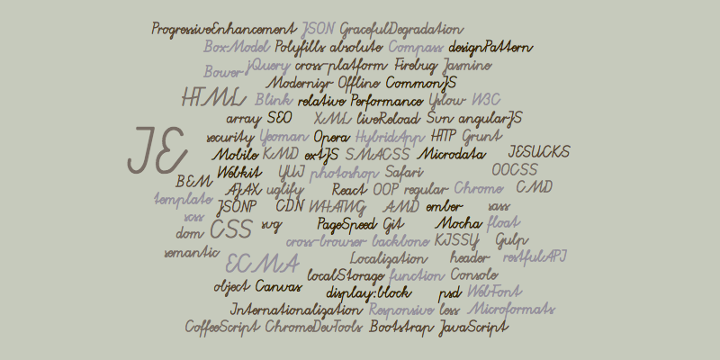

淘宝前后端分离实践
Created by 赫门
who is this guy?
- Herman Lee FED
- http://weibo.com/threeday0905
(΄◉◞౪◟◉‵) ~ HI
主题
前后端分离
現狀
还是分离吧
Why?
就跟為什麼要代碼重構一樣
- 关注点分离
- 职责分离
- 对的人做对的事
- 更好的共建模式
- 快速的反应变化
从几年前说起
一、创业吧！弟兄們
老子一個人全包了啊啊啊
- Roles: PM, DBA, RD, FED, Designer, ...
- Skills: Linux, MySQL, JAVA, JavaScript, HTML, CSS, ...
- Tools: phpmyadmin, photoshop, powerpoint, ...
产品上线了
后面维护的人
开心的打开代码
......是谁把手套放进锅子里面煮
.............
二、重构！为了更好的未来
Web Server的架构改造
后端MVC时代
前端: 那..我呢
PM: 去套页面
看似很美好的分工
到了互联网时代
根本頂不住
三、互联网浪潮
携手合作
Front-end Skills
项目搞定了，但是
The Problems
前端代码越来越复杂
- 无法统一协作模式，代码充满了约定
- JS跟CSS，依賴於後端產出的HTML
- 有的数据來自AJAX，有的数据印在DOM上
- 有的业务邏輯在前端，有的在Model层，更多的是在View层
前后端依旧高度耦合
- 前端依赖服务端开发环境
- 在服务端View层高度耦合
- 沟通成本高
- 职责不清晰
View层谁来維護？
- 前端写Demo，后端套页面
- 后端需要写HTML
- 前端仍然确认后端写的HTML
- 前端写View层，后端只管数据
- 前端需要熟悉后端语言
- 前端需要了解后端架构
无法良好的支持跨终端
- 业务逻辑散落在应用中
- 渲染逻辑强依赖后端页面
- 只能用responsive design硬来
高度耦合的前后端分工
- 沟通成本上升
- 维护成本上升
- 无法正确且快速的响应变化
- 代码的腐烂只是迟早的问题

四、第一次前後端分離大戰
Client-side MV* 时代

接口分離, 後端提供數據, 前端自己搞
Model层 - JavaScript Object
View层 - JavaScript Template
业界满坑满谷的优秀方案
Backbone, EmberJS, KnockoutJS, AngularJS, React, etc.
前后端职责清晰了
| 后端 | 前端 |
|---|---|
|
|
分離乾淨了，分工明確了，但是
The Problems
各层职责重叠，并且各玩各的
- Client-side Model 是 Server-side Model 的加工
- Client-side View 跟 Server-side是 不同层次的东西
- Client-side的Controller 跟 Sever-side的Controller 各搞各的
- Client-side的Route 但是 Server-side 可能没有
性能问题
- 渲染，取值都在客户端进行，有性能的问题
- 需要等待资源到齐才能进行，会有短暂白屏与闪动
- 在移动设备低速网路的体验奇差无比
重用问题
- 模版无法重用，造成维护上的麻烦与不一致
- 逻辑无法重用，前端的校验后端仍须在做一次
- 路由无法重用，前端的路由在后端未必存在
跨终端问题
- 业务太靠前，导致不同端重复实现
- 逻辑太靠前，造成维护上的不易
SEO问题
渲染都在客户端，模版无法重用，SEO实现 麻烦

五、第二次前后端分离大战
进入主题
重新定义前后端
传统认知的前后端

是依照 工作职责来划分的前后端
还是依照 硬体环境划分的前后端？
因為有了NodeJS
我们有机会从工作职责上
重新定义前后端的分层
重新定义的前后端

在服务器(JAVA) 与 浏览器(JS)的中间
架了一个中间层(NodeJS)
Why NodeJS
因为这个场子叫做杭JS
.............
Why NodeJS
- 前端熟悉的语言，學習成本低
- 都是JS，可以前后端复用
- 体质适合：事件驱动、非阻塞I/O
- 适合IO密集型业务
- 执行速度也不差
职责划分
后端 | 前端 | |
|---|---|---|
| 服务器 | 浏览器 | |
| JAVA | NodeJS | JS + HTML + CSS |
|
|
|
职责清晰的架構 + 前端范围的扩展 =
更多的可能
实际示例
淘宝首页优化
需求
静态资料展示，方便运营管理
更好的承载密集且庞大的流量
解决方案
页面缓存与定时刷新，返回缓存资料
NodeJS产出静态页面到CDN，定时刷新
淘宝详情页优化
需求
单日四亿PV，页面数据来自各个不同接口
为了不影响体验，先产生页面框架后
在发起多个异步请求取数据更新页面
这些多出来的请求带来的影响不小，尤其在无线端
解决方案
在NodeJS端使用 Bigpiper 技术
合并请求，降低负担
分批输出，不影响体验
接口性能优化
拆分大接口为独立小接口，并发请求
串行 => 并行，大幅缩短请求时间
部属优化
一台NodeJS对多台JAVA服务器
合理的分配服务器带来最大的产出
页面渲染优化
- 前后端共享模版
- 首屏服务器渲染
- 次屏浏览器渲染
- 局部刷新浏览器渲染
单页面应用优化
- 前后端共享路由与模版
- 前端换页，浏览器端渲染
- 直接输入网址，服务器渲染
- SEO问题迎刃而解
可靠性优化
单元测试，页面测试，回归测试，持续集成
更多的可能
具体的改造
接口服务化
代码模块化
功能组件化
服務化
接口规范
- 基于 JSON Schema
- 增强 在 请求与返回 的 条件描述
- 扩展 format ，增加业务定义
接口管理平台
- 自动化管理文档，提供以下功能
- 版本管理 - 比较, 合并, 历史记录
- 应用发布 - 应用灰度, 应用回滚
- 接口验证 - 格式验证, 回归测试
接口模拟
- 透过 接口定义 产生 模拟数据
- 前端不需等待后端的接口，即可开始开发业务
- 基于不同条件产生模拟数据，测试 边界情况
- 后端的接口必须通过接口验证，降低 联调成本
NodeJS - 模块支持
- 抽象支持不同接口 - HTTP，MySQL，etc.
- Data Proxy - 只负责数据通讯与搬运
- 前端开发不需关注实践细节，仅使用数据
- 后续迁移成本低
- 与接口管理平台整合
模块化
越来越多人重视浏览器端JS的模块化
但也是有项目是一个jQuery走到底
但到了服务器端的NodeJS
模块化是一个必须遵守的标准
但是我们写的JS模块
并不仅限于 NodeJS端
Everything is Module
| Model | Helper | Utility |
| View | CSS | DOM Event |
| Controller | Route | etc... |
| Other Libraries, ... | ||
模块选型
毫无疑问的 CommonJS
加上 工具支持 输出成不同规范
CommonJS, CMD, AMD, KMD, WhateverMD
前后端复用
- 透过一致的模块规范，加上都是用JS编写
- 模版可重用在浏览器端与服务器端
- 模型与方法可重用在浏览器端与服务器端
- 控制与路由可重用在浏览器端与服务器端
- 或是更多的可能
模块预处理
除了 CommonJS标准 转换外，
是否能做其他预处理？
模块预处理
- JS Convert：coffee script, dart, etc.
- ES6 Complier：Traceur-Complier, JSDC, etc.
- CSS Complier：sass, less, stylus, etc.
- 共用模块加载：polyfill, etc.
- 业务预处理
- 其他的可能
这都是之前的分工模式下很难做到的
组件化
封装
把细粒度的模块封装成应付业务需求的组件
组合
挑选不同的组件，完成实际的应用
多型
针对不同环境，单一组件 可具备 不同型态
同一组件在不同环境下可以有不同的行为
但是共用同样的逻辑
例如一个地址选择器
在不同的设备：pc, mobile, pad, tv
不同的环境：browser, native app, hybrid app上
有著不一样的呈现结构，不一样的交互方式。
但有著一样的校验逻辑，共用同样的数据接口。
如何办到？
封装适合的组件。不同的场景组合不同的结果
透过多型机制正确的输出
而且可以服务器、浏览器通用